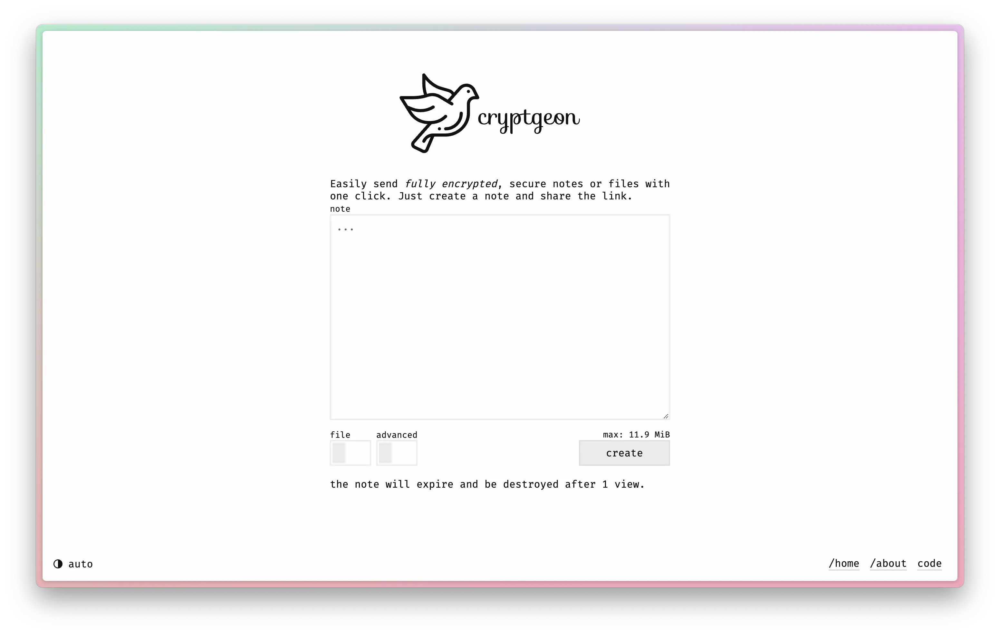
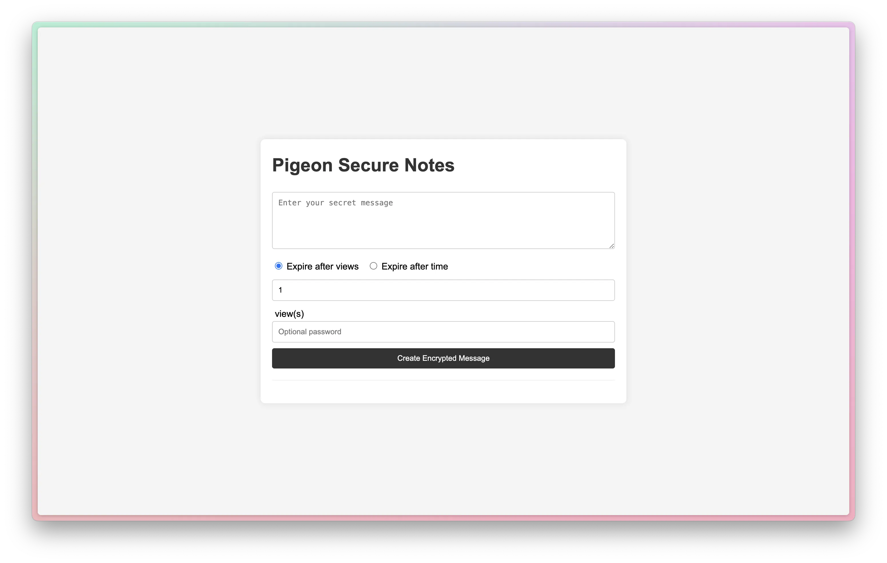

written by Eric J. Ma on 2024-10-06 | tags: ai programming productivity software development automation cryptography
In this post, I detail my experience building Pigeon Secure Notes, a secure note-sharing app, in under 15 minutes of coding time. I highlight the use of AI-assisted coding tools like Cursor and Claude Sonnet, discuss the challenges faced during development and deployment, and reflect on the benefits and limitations of AI-assisted programming for experienced developers. The post also touches on the importance of practical wisdom in software development and the thrill of building at "the speed of thought."
This past week, I gave myself a challenge: to replicate Cryptgeon's core functionality as fast as I could using AI-assisted coding. I did it! And I put a demo up at https://pigeon.ericmjl.com. Turns out, I only needed 15 minutes of coding to make it happen. This is how it went.
First off, I opened up Cursor, took a screenshot of Cryptgeon, and prompted Claude Sonnet 3.5 with the screenshot and the following prompt in the Composer UI:
I would like to replicate the website in the attached screenshot. It is an app that lets people create encrypted notes that are only viewable X number of times. Use HTMX for the front-end, FastAPI for the back-end, and SQLite for data storage.

Caption: Screenshot of Cryptgeon.
Cursor went ahead and created 3 (!) files immediately:
app/main.py,templates/index.html,styles.cssI then hand-configured pixi.toml to provide an app command that I could run at the terminal as follows:
app = "uvicorn app.main:app --host 0.0.0.0 --port 8174 --reload"
such that I would be able to run the following command and view the development server:
pixi run app
Running that, I was able to get the development server up and running. The UI wasn't stunning, but wasn't shabby either. I wish I had grabbed a screenshot, because this was just 7 minutes of coding to making it happen thus far, but alas, in my excitement I forgot to.
Cryptgeon is capable of doing more than just one-time notes, however. One can configure the app to provide a time limit for viewing as well. To add that functionality, after work, I took a screenshot of cryptgeon with its advanced settings and prompted:
Based on the screenshot, there is one other functionality that I need: to enable users to configure Pigeon's notes to be non-viewable after X minutes OR views. Add this functionality for me.
Within a minute, Cursor had modified the relevant files. I double-checked the functionality to make sure it was correct (it was!), and did a, ahem, cursory check on the files to make sure they didn't violate any obvious patterns, and decided it was good enough, and committed the changes. This was 3 minutes total.
From developing Shortmail,
I picked up quite a number of patterns
that I had to figure out the first time round
(which is partly why it took 2 hours to get to the first prototype while this app took 15 minutes),
such as deciding where to mount static assets,
the SQLite database file,
and configure relative paths.
Having wrestled with these issues in one app before helped me a lot.
I did a few file moves
(such as moving templates/ and static/ to live side by side with main.py)
as well as changing hard-coded paths to environment variables
(e.g. the location of the database file).
This took a bit longer than I had expected,
but wasn't too difficult either --
just 5 minutes of reconfiguring,
and I had the core functionality of Cryptgeon working
in a way that I would be confident to deploy.
I followed the deployment pattern that I had previously set up for Shortmail (and other utility apps that I've deployed on my own Dokku server on DigitalOcean), using the official Dokku GitHub Actions to automate deployment so I wouldn't have to do it manually myself. Nonetheless, I still ran into some errors with deployment, getting the dreaded light blue screen. As I had some unforeseen errors that weren't showing up in the logs, it was challenging to debug, until I set up a Docker container locally to mimic what was going on in the Dokku server. (Those turned out to be more file path issues!) By fixing these, I deployed with confidence, and now I have Pigeon Secure Notes deployed:

Caption: Screenshot of Pigeon Secure Notes.
What I think was very cool about this whole experience was getting a taste of what it's like to have an exoskeleton (borrowing a phrase from my friend Virgile Andreani, who found it from another written piece on AI-assisted coding). Having an AI do the metaphorical heavy lifting of typing was liberating: my brain runs faster than my fingers, so the bottleneck to operating at the speed of thought, for me, is literally the speed at which I can type.
That said, while I was reliant heavily on Cursor and Claude Sonnet to do a lot of the heavy lift in typing, there was no substitute for experience in judgment to know:
That kind of practical wisdom can only come from practicing building stuff over and over and over. There's no theory class to teach this stuff, because it's phenomenologically driven by the constraints of reality -- human limitations, tech stack constraints, language bottlenecks, and more. In building Shortmail and Pigeon Secure Notes, I spent most of my time double-checking that things worked correctly and according to my own requirements. This jives with a view of what Steve Yegge suggests that experienced coders will do:
- You know what you want before the AI writes it. You already have a vision for how you would write this by hand, or have it narrowed to a few reasonable options.
- You can detect when it is giving you bad guidance.
Gary Marcus has written at length cautioning against the hype of AI. While I'm generally anti-hype, my own experiences coding with AI assistance are that when conducted with appropriately adjusted mindsets, instead of feeling and fueling the hype, I feel like I'm flying high. There is an undeniable thrill in this mode of programming, being able to build stuff at a fast clip, to iterate at the speed of thought.
The biggest one is this: Because I'm not a cryptography or security expert, I can't vouch for the methods that I've used on pigeon. It may not be as secure as Cryptgeon. I bet if I had the necessary expertise, with a bit more time I'd be able to secure it to the same degree. I think the big weakness at the moment is that there is a Fernet encryption key that needs to be set globally, and so if anyone gets their hand on that key, I will have to rotate them. Well, typing this out just gave me an idea on how to make this more secure -- writing is a way of thinking, after all -- so I'm glad I'm blogging about this!
UPDATE: Within a minute of blogging this, I updated the app to do a per-message Fernet key which get stored in the database alongside the message, and is deleted with the message when the message expires. Cursor introduced a bug on its first attempt (it was using different keys to decrypt the message), but when I further inspected the code and described what I thought was the bug, Cursor got it right on the retry.
@article{
ericmjl-2024-building-pigeon-secure-notes-in-under-15-minutes-of-coding,
author = {Eric J. Ma},
title = {Building Pigeon Secure Notes in under 15 minutes of coding},
year = {2024},
month = {10},
day = {06},
howpublished = {\url{https://ericmjl.github.io}},
journal = {Eric J. Ma's Blog},
url = {https://ericmjl.github.io/blog/2024/10/6/building-pigeon-secure-notes-in-under-15-minutes-of-coding},
}
I send out a newsletter with tips and tools for data scientists. Come check it out at Substack.
If you would like to sponsor the coffee that goes into making my posts, please consider GitHub Sponsors!
Finally, I do free 30-minute GenAI strategy calls for teams that are looking to leverage GenAI for maximum impact. Consider booking a call on Calendly if you're interested!